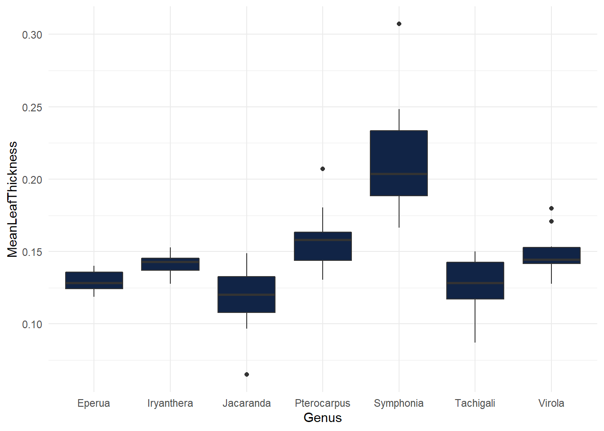

Materials & method
3.12 Study species
We selected 7 species, chosen according to their abundance in SFF and according to in natura availability during the wet season of 2021 (January-September 2021).
| Genus | Species |
|---|---|
| Eperua | falcata |
| Iryanthera hostmannii | NA |
| Jacaranda | copaia subsp. copaia |
| Pterocarpus | officinalis |
| Symphonia | globulifera |
| Tachigali | melinonii |
| Virola | surinamensis |

Figure 3.1: Selected
3.13 Sampling strategy
Samplings were carried outside the permanent plots of Paracou Station (5°18’N, 52°55’W), a lowland tropical rainforest in French Guiana, South America. The sampling area is characterized by a rugged landscape formed by the alternation of 40–50 m high hills, slopes and bottomlands, varying in soil drainage type and water table depth (Gourlet-Fleury et al., 2004). Out of the three habitat types, species were only collected in the bottomlands. Bottomlands were described by Ferry et al 2010 with hydromorphic soils and a water table between 0 and 60 cm in depth depending on the season. We opted to sample 1 year-old seedlings as they are easy to access and represent a crucial stage in the establishment of a species. Indeed, the ability of seedlings to survive during drought has been shown to be a key determinant of species distributions for tropical forests (Kursar et al 2009), since the seed-to-seedling transition is where mortality from drought and resource limitation are critical.
Maps of seedling sampling:
- Eperua_falcata
- Iryanthera_hostmannii
- Jacaranda_copaia subsp. copaia
- Pterocarpus_officinalis
- Symphonia_globulifera
- Tachigali_melinonii
- Virola_surinamensis
Field protocol: * Field_protocol

Sampling material
3.14 Greenhouse experiment
After collecting the seedlings, they were immediately brought back to the campus for grounding. Seedlings were then directly transplanted into 4 L pots filled with a sandy substrate composed of a 1:2 mixture of a brown ferralitic clay soil from terra firme forest. Seedlings were pooled in batch, organized by species and GPS position (1 GPS position equaled to 1 mothertree) (see Field Protocol for more details). Seedlings were grown in a shadehouse during at least one month and irrigated two times a day (8h and 18h during 5 mins). When the mortality rate was stable, seedlings were then placed into the greenhouse for the experiment according to a randomized block design.

rotate.image(img, angle = 90, compress=NULL)
The daily rainfall recorded by the Sinnamary Weather Station (MétéoFrance) over the past 64 years (1955-2019) enabled us to calculate the annual mean ± SD maximum number of consecutive days without rainfall (detection limit 0.2 mm) in a dry season (August-November): 21 ± 5 days. A decrease up to 30 % in precipitation trend is projected in the Amazon region by 2100 (3). The maximum number of consecutive days without rainfall was 71 days in 1976. We then ask ourselves could an ‘‘extreme’’ event of the past become more common in the future? Drought was induced by completely withholding water. We exposed seedlings to four different watering treatments, followed by a recovery period of one month (21).
- Well-watered every 2-3 days to field capacity (Control (C0))
- Water withheld during 21 days (Current-DRY (D1))
- Water withheld during 27 days, the projected norm 21 days + 30 % (Projected-DRY (D2))
- Water withheld during 71 days, a rare event (X-DRY (D3))
Figure 3.2: Greenhouse design
3.14.1 Randomized design
A randomized block design is an experimental design where the experimental units are in groups called blocks. The treatments are randomly allocated to the experimental units inside each block. When all treatments appear at least once in each block, we have a completely randomized block design. This kind of design is used to minimize the effects of systematic error. If the experimenter focuses exclusively on the differences between treatments, the effects due to variations between the different blocks should be eliminated.
I used the blocksdesign package for the construction of block and treatment designs:
blocksdesign::blocks(treatments=list(3,1,1),replicates=list(4,5,3),blocks = 4)
4 blocks containing: 3 different water treatments repeated 4 times 1 control treatment repeated 5 times (they are more individuals for the control group) 1 “imaginary” treatment repeated 3 times to have an even design
The goodness or efficiency of an experimental design can be quantified:
+ D-effciency: a function of the geometric mean of the eigenvalues
+ A-efficiency : a function of the arithmetic mean of the eigenvalues
Both are based on the idea of average variance, as the variance gets smaller, the efficiencies go lower. The best design is the one with the highest A- and D- efficiencies
For the following block and treatment design, I obtained 0.9793704 and 0.9787234 for the A- and D- efficiencies respectively.
Inside each treatment block, I organized the 7 species randomly. Again, 7 is an odd number, so I used an 8th imaginary species to obtain an even design. Example for the control group:
blocksdesign::blocks(treatments=8,replicates=5,blocks = list(5,2))
Individuals for each species were then randomly assigned within each species block in order to mix mothertree origin within treatments.
Figure 3.3: Greenhouse design
We finally were able to have :
| Family | Genus | Species | Done | Left | Goal |
|---|---|---|---|---|---|
| Fabaceae | Eperua | falcata | 136 | 0 | 136 |
| Myristicaceae | Iryanthera | hostmannii | 135 | 1 | 136 |
| Fabaceae | Jacaranda | copaia | 117 | 19 | 136 |
| Fabaceae | Pterocarpus | officinalis | 136 | 0 | 136 |
| Clusiaceae | Symphonia | globulifera | 128 | 8 | 136 |
| Fabaceae | Tachigali | melinonii | 132 | 4 | 136 |
| Myristicaceae | Virola | surinamensis | 136 | 0 | 136 |
